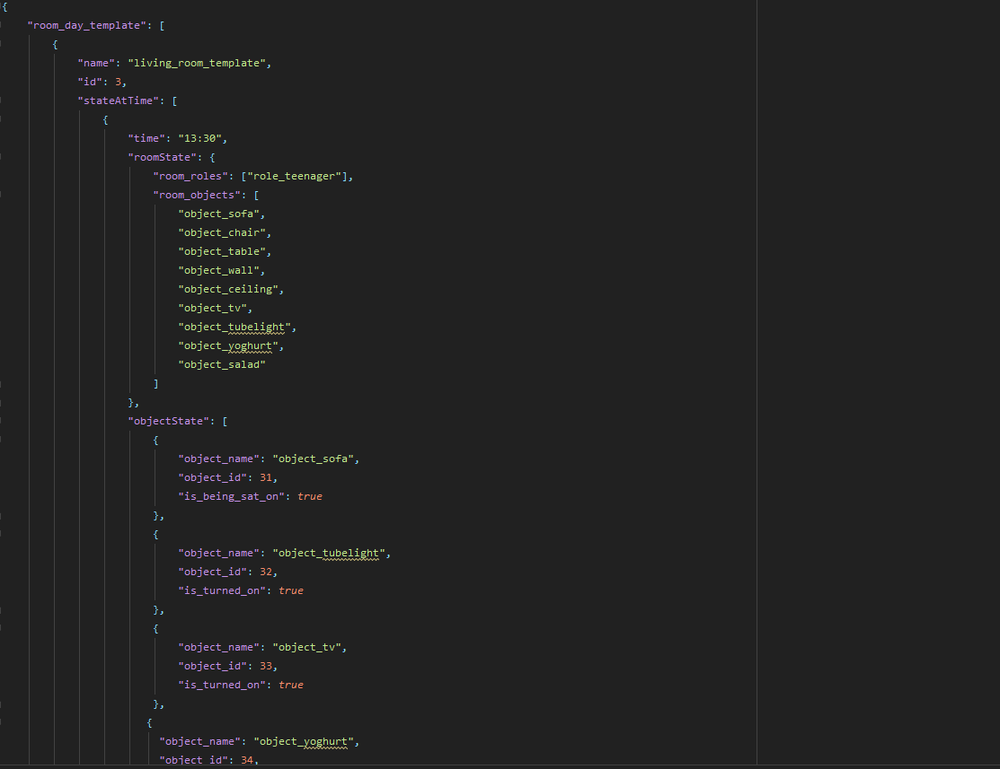

Project Summary
PROJECT OVERVIEW
The main vision of this project is to simulate a real-life state of the country akin to a video game that will be able to store the lives and updates of citizens of a country, the objects as well as their states over some years. We aim to store this simulation in an efficient way so it can be easily handled and queried in a normal PC.
What will be the challenge?
As this will be a large-scale project of storing millions of different citizens lives in hundred of years, we will deal with the issue of storage at a certain stage. While we haven’t reached that stage yet, we aim to store the datasets of this project, the ‘rooms’ with minimal and basic information to differentiate one data from another.Why this project can be useful?
This can be really helpful for data sensing of countries to see the trend of their growth. Or for game development akin to SimCity’s Glassbox Engine. We can know what changes have been made over a couple of years to run a country simulation. We can present statistics for a certain region like the census and run it easily on a desktop PC without requiring further hardwares.Where will we be feeding the data of a country from?
At first we will be manually adding data. However as time proceeds, we will simply be using JavaScript functions to create a dataset as per the template with the inputted data. Creating millions of ‘rooms’ is not easy, so we will merge this project with a similar life-simulation project and feed the templates with the outcomes of the life-simulation project. In fact we can even use AI to feed in data.
HOW WILL WE CARRY ON WITH THE PROJECT
In this project, the main programming language will be Python and MongoDB. We will be creating templates using JSON and having a webserver with Flask to display the queries from MongoDB.

|
Template view - download project code for full view

|
We will have different sets of objects in the templates:
- Rooms - This will be a place where a person may visit or see in their daily life. For example, bedroom, living room, kitchen etc.
- Objects - This will be a typical object inside a room such as chair, wall, ceiling etc.
- Roles - This will be a normal person inside a room. Such as a chef, housewife, boy.
- State (of Object) - An object that can be interacted with will have a State. A lamp can have a state of turned_ON or turned_OFF.
- Action (of Role) - An action of what a role is doing. A chef would have the action of is_cooking.
Our JSON template will consist of these objects. The data will be fed and sorted into these objects, just like the life of a person in an adventure game. For now, these are simple objects in the template but we aim to make these more complex and intricated to resemble a real-life simulation. For instance, we will create day templates of rooms that record the changes in the room as time changes.
Once the templates are made, we will be loading this data into a MongoDB database using Python libraries. Then we’ll be viewing the data in the MongoDB database in a browser using Flask.
What has been done so far?
So far we have been able to create basic templates for the life of a person who just visits a few couple rooms. We have been able to display this data stored in a MongoDB database in a web browser using HTML. Also apart from just viewing all data, we can view raw data as well. We have also implemented a search system for
fetching the state of a room - its roles and objects closest to a user input time. For this project, the margin was 45 minutes. That means that if a user inputs 12 PM, the room states 45 minutes near the input time will be displayed.
Apart from just displaying data, we have also allowed data manipulation. From the index page, clicking on a room allows a user to add unique roles, objects, state of object and state of role to the collection. This allows unique objects/roles with ID to be created and their actions/state in the form of boolean type.
All of this is done using Flask webserver in Python and simple HTML webpages. The application routes the webpages to specific functions, like index, search, add and raw.
What needs to be done next?
Our next plan in this project is straightforward put like this:
- 1. Make the templates for rooms more complex while ensuring that it utilises minimum storage as possible.
- Next time, we aim to expand the templates from just the ordinary life to a bigger size, possibly more than just few rooms? We will also create the day templates of rooms that will be arrays of the room state and times within a day. Separate template of room-year-templates will have 365 IDs to the day templates. This will be a good catchup to return the room state at any day and time.
- A similar template system will be for people.
- 2. Implement AI to automate the procedure of creating rooms
- At this moment in the project we just have a few rooms. However for real-life simulation we need to expand upon hundreds if not thousands of rooms.
For this, manually creating template for every room is not possible. There needs to be an automated procedure to create templates instead of manually
creating rooms.
- 3. Create JavaScript functions to delete data from the collection
- Although this is not a priority, a JavaScript function to delete data from the collection would be handy to have!
- 4. Compress the datasets
- What we are storing is arrays. We plan to compress them further. One way to do this is to create JavaScript functions that take the parameters and returns the room state.
- 5. Creating a better UI
- Creating a better UI when viewing the database results for clarity of the end user.
- 6. Feeding the data from the ‘life simulation’ project. This will provide us with sample data to at least visual a bit of real-life country simulation.
GUIDE TO GET THE PROJECT RUNNING
The how-to guide here contains a brief description of how to run this project from the start.
FURTHER RESEARCH MODELS
Further research models that the project has been based onto can be found here
Glassbox Engine Article #1
Glassbox Engine Article #2
These articles explain the SimCity's Glassbox Engine which is a similar visionary project to this one. The engine is still being used
by the gaming company for creating the simulation worlds in their games.
I have taken inspiration from these models - which are obviously more advanced but gives an insight on how things at the bottom
work as.
The Glassbox Engine also works on concept of different object types for each part of the game. Just as a game ahs resources, maps, etc, this
project has different data types for different rooms, roles and objects each representating a different part of the place we're simulating.
The action of what is happening at a room at that time is termed as state which in the Glassbox Engine is termed as 'Rules'. Although the Glassbox
engine has more advanced rules, our project has simple noun-based states to let us simply know if an action is being performed or not, in the form of boolean.
For example 'light_is_turned_on' - true tells us light is turned on. This is made as short as possible to keep in mind the storage
implications which is one of the main goals of the project.
While the research on this time of simulation model for storing real-life details is actually pretty rare, I believe it can really be put forward to great use to expand by others on it!
Apart from just creating more complex templates for days, months and years and better search functionality, this project can bridge along with a 'Life Simulation' project that prepares a dataset on the life of the people. This very dataset
can be feeded into the templates for a life-like scale of a country or let's say for smaller scale, a city.
As stated above, this can be used in various different fields - statistics, health, etc. I hope this gives a clearer view of what this project is and what can be achieved from it.
{kind=link}